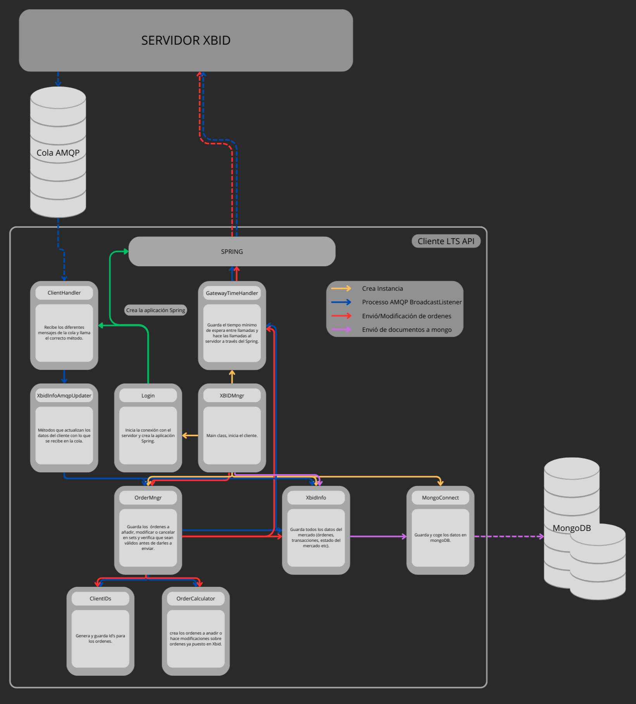

Lo que sigue es un diagrama de bloques del proyecto entero. Explica de manera resumada el funcionamiento de la API. No estan descrita todas las clases y solo esta escrito un resumen para cada clase.

Esta API automatiza las operaciones en el mercado continuo y guarda los datos en mongoDB. La API está desarrollada en JavaSE-1.8 y se base sobre la versión proporcionada por OMIE. Esta documentación trata principalmente de lo que se ha añadido a la API de OMIE, para más informaciones ver la documentación de OMIE.
Organización de las diferente clases en el proyecto
Lo que sigue es un diagrama de bloques del proyecto entero. Explica de manera resumada el funcionamiento de la API. No estan descrita todas las clases y solo esta escrito un resumen para cada clase.